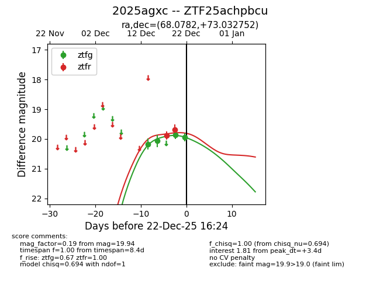
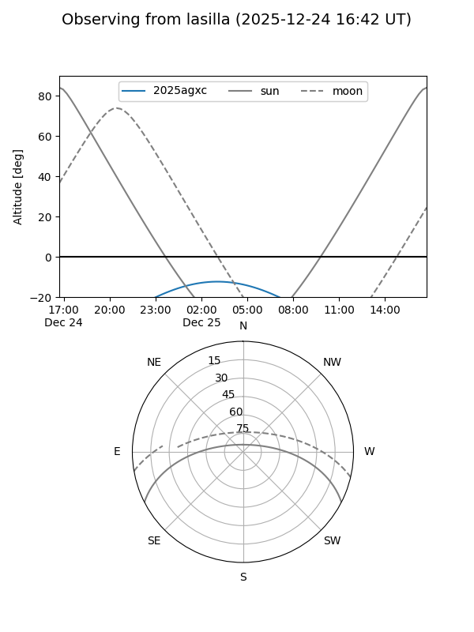
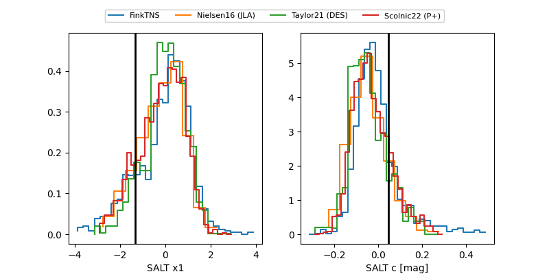

2025agxc
Target 2025agxc at 2025-12-20 04:44
Aliases and brokers:
FINK: fink-portal.org/ZTF25achpbcu
Lasair: lasair-ztf.lsst.ac.uk/objects/ZTF25achpbcu
ALeRCE: alerce.online/object/ZTF25achpbcu
TNS: wis-tns.org/object/2025agxc
YSE: ziggy.ucolick.org/yse/transient_detail/2025agxc
alt names
ZTF25achpbcu (ztf,fink_ztf)
2025agxc (tns,yse)
Coordinates:
equatorial (ra, dec) = 68.0782,+73.03275
equatorial (HMS+DMS) = 04:32:18.76,+73:01:57.91
galactic (l, b) = (137.4266,+16.73701)
Flags:
Photometry:
last ztfg=20.06, ztfr=19.69
2 ztfg, 2 ztfr detections
Lightcurve

Visibility


Additional plots
